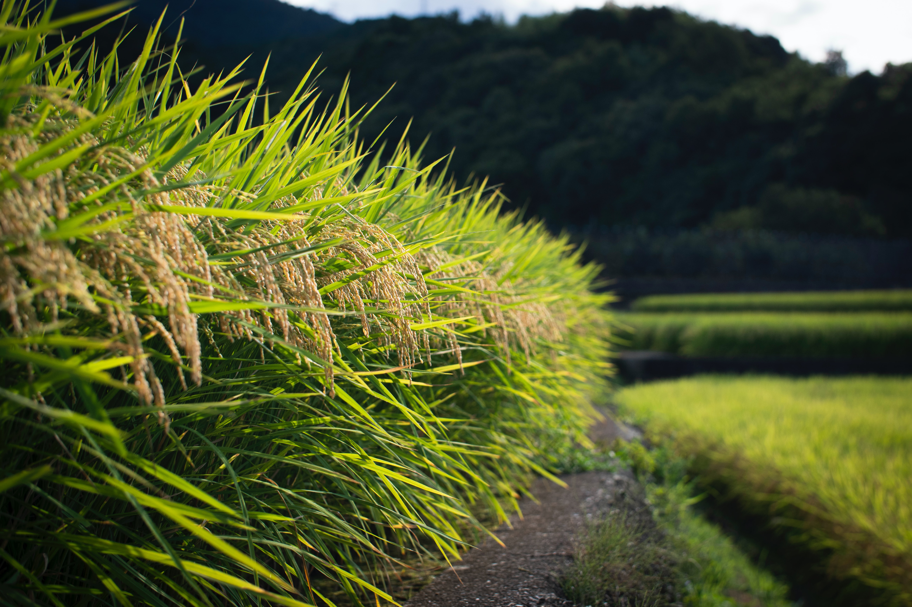

Coffee
Best Coffee Planting Practices: Embark on a journey to elevate your rice farming with Farmer360's expert insights into the best farm practices. Learn the art of precise planting, efficient water management, and strategic pest control to optimize your rice fields. Our comprehensive guide covers everything from selecting the right rice varieties to implementing cutting-edge cultivation techniques. Whether you're a seasoned farmer or just starting, Farmer360 is your partner for cultivating a thriving rice harvest.
Best Fertilizers for Coffee Farms: Unleash the full potential of your rice crops with our curated selection of the best fertilizers designed to maximize yields and nourish your fields. Farmer360 brings you recommendations tailored to the specific needs of rice cultivation, ensuring your plants receive the nutrients essential for robust growth. From nitrogen-rich formulations to micronutrient-enriched blends, discover the fertilizers that will transform your rice fields into flourishing landscapes of abundance.
Pest management for Coffee: Harvested a bumper crop of rice? Now, ensure its quality and longevity with Farmer360's insights into the best storage practices. Discover the optimal conditions, container options, and pest management strategies to keep your rice grains pristine from harvest to market. Farmer360's storage recommendations are tailored to safeguard the nutritional value and market value of your rice, providing you with the knowledge to store with confidence and reap the rewards of a well-preserved harvest.
Best Storage for Coffee: Harvested a bumper crop of rice? Now, ensure its quality and longevity with Farmer360's insights into the best storage practices. Discover the optimal conditions, container options, and pest management strategies to keep your rice grains pristine from harvest to market. Farmer360's storage recommendations are tailored to safeguard the nutritional value and market value of your rice, providing you with the knowledge to store with confidence and reap the rewards of a well-preserved harvest.